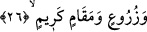
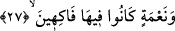
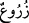
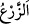
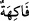

ağaçlı bağlar bostanlar ki bunlar Mısır’da Reşîd’den Asüvan’a kadar olan bölgede
bitişik vaziyetteydi. İki bölge arası yirmi günlük mesâfeden daha fazladır. Âyette ihtisâr
yapılmıştır. Mânâ şudur: Hz. Mûsâ (a.s.) kendisine emredilen şeyi yaptı. Denizi olduğu
gibi açık ve sakin olarak bıraktı. Firavun ve kavmi açılan bu yola girdiler ve
boğuldular. Geride ise birçok bağ, bahçe ve bostanlar bıraktılar.
Su kaynayan “çeşmeler” akan su kaynakları demektir. Belki de bundan murâd, Nil’in
kolları olarak akan ırmaklardır. Çünkü Mısır’da kuyu ve gözeler yoktur. Hatta bazıları
bu göze ırmak ve bostanların yerilmesi sadedinde şöyle demişlerdir: Evet bu bahçeler
yüksek rutûbetin getirdiği sis yüzünden birçok hastalıklar ortaya çıkaran ve gıdâların
bozulmasına sebep olan rutûbetli deniz ile kuru, sert dağ ve kıyılar arasında
bulunmaktadır. Bu kıyıların kuruluk ve kıraçlığı o kadar fazladır ki, bu bölgede yeşillik
bitmediği gibi, su kaynağı da çıkmaz.
26. Ekinler, güzel makamlar!
“Ekinler” “/zürû‘” kelimesi “/zer‘” kelimesinin çoğuludur. Bu, tohumun
bitirdiği şeydir. Masdar ekine isim olarak kullanılmıştır.
Keşfü’l-esrâr’da her çeşit azık gıdâ ve çeşit çeşit yemekler olarak anlatılmıştır. Yani
bunlar Araplardan farklı olarak bolluk ve refah içindeydiler. “Güzel makamlar”, nice
süslü konaklar ve görkemli saraylar demektir.
27. Ve zevk u safâ sürdükleri nice nîmetler!
“Nîmetler” nîmetlenme ve parlak bir hayat. Nîmete sahip olma ve faydalanma
sebepleri. Şöyle denilmektedir: Nice nîmet sâhibi vardır, ama nîmeti yoktur. Yani nice
mal sâhibi vardır, ama ondan faydalanamaz. Nîmet sana in’âm edilen şeydir. Nâmet ise
nîmetten faydalanmak demektir. Bu yenilen ve giyilen şeyleri kullanarak onlardan
faydalanmaktır. Yani ferah bir hayat geçirmektir.
“Zevk u safâ sürdükleri” ifâdesi nîmetlenip zevk u safâ sürüyorlardı demektir. “/Fâkihe” bu kabildendir. Yenilerek nîmetlenip kendisinden lezzet ve zevk duyulan şey
demektir.